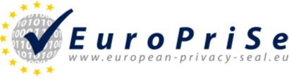
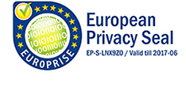

|  |
|
Le premier sceau européen de protection de la vie privée décerné Le premier sceau européen de la protection de la vie privée a été présenté aujourd'hui au moteur de recherche ixquick.com par le commissaire européen à la protection des données, Peter Hustinx, à l'occasion du 30e anniversaire de la législation sur la protection des données à Schleswig-Holstein.Kiel, Allemagne - 14 juillet 2008 EuroPriSe décerne aujourd'hui le premier sceau européen de protection de la vie privée pour les produits d'ICT et les services basés sur la TI. Ce sceau garanti la conformité avec les lois et réglementations exigeantes de l'UE en matière de protection des données et de la vie privée. L'un des problèmes les plus importants de notre société d'information d'aujourd'hui est le manque de confiance découlant de la possibilité de la surveillance électronique. Afin de protéger les consommateurs et les commerces contre ce genre de méfiance, il faut leur donner la possibilité de choisir un produit qui protège leur vie privée. C'est ici qu'intervient EuroPriSe. EuroPriSe est financé par le programme eTEN de la commission européenne à la hauteur de 1,2 millions d'euros et mis en oeuvre par neuf organismes sous le leadership du Independent Centre for Privacy Protection Schleswig-Holstein (ULD). Dans le cadre de ce programme, les produits de la TI et les services basés sur la TI sont vérifiés afin de déterminer s'ils peuvent être certifiés conformes à la réglementation européenne sur la protection des données et de la vie privée. Cette vérification se fait en deux étapes : la première étape consiste en l'évaluation du produit ou du service par des experts connus du domaine légal et du domaine de la TI, suivi par une contre vérification du rapport d'évaluation par un organisme de certification agréé. En introduisant des procédures vérifiables et transparentes, supervisées par des autorités indépendantes, EuroPriSe procure une marque de confiance pour la vie privée des utilisateurs finaux des services de la TI » déclare le Dr. Thilo Weichert, commissaire à la protection des données pour la région la plus au nord de l'Allemagne et directeur du ULD. « Plus de 120 experts provenant de divers pays de l'UE ont déjà été formés pour travailler avec les critères de EuroPriSe et plus de 40 experts ont réussi avec succès la procédure d'admission et ont été autorisés à offrir des évaluations pour les produits et services de la TI, et des services conforme aux critères du sceau européen de protection de la vie privée. Dix-huit entreprises, de six pays différents, participent aux projets pilotes de certification et d'autres entreprises ont commencé le processus d'évaluation. La première certification complétée avec succès représente un jalon et encouragera d'autres entreprises à participer au programme, » a déclaré Kirsten Bock, gestionnaire de projet chez EuroPriSe. Le premier sceau européen de protection de la vie privée a été présenté ce matin par le commissaire européen de la protection des données, Peter Hustinx, à Ixquick, un métamoteur de recherche européen.  Ixquick est un métamoteur de recherche (www.ixquick.com) qui transfert les requêtes de recherche de ses utilisateurs à plusieurs moteurs de recherche, recueille et synthétise les résultats et les présente aux mêmes utilisateurs. La protection de la vie privée est assurée par plusieurs techniques de minimisation des données : les données personnelles telles que les adresses IP sont supprimées dans les 48 heures, après cette période elles ne sont plus nécessaires pour prévenir un possible abus des serveurs. Les données (non personnelles) restantes sont supprimées dans les 14 jours qui suivent. Ixquick fonctionne comme un mandataire, c'est à dire que les adresses IP des utilisateurs ne sont pas révélées aux moteurs de recherche. Le sceau européen de protection de la vie privée encourage la conformité au cadre légal de la protection des données européen et met en évidence les produits et services de la TI qui respectent la vie privée des clients d'affaires et des consommateurs. L'attribution du premier sceau de protection de la vie privée européen au métamoteur de recherche Ixquick est un jalon important dans la mise en oeuvre de la protection de la vie privée sur l'Internet et souligne ce service qui respecte la vie privée. » a souligné Peter Hustinx, commissaire européen à la protection des données. La commission européenne encourage l'idée de la création d'un programme de certification de sceau de protection de la vie privée européen basé sur les normes élevées de la protection de la vie privée européennes. Les consommateurs et les entreprises bénéficient de l'identification facile d'un produit de TI qui assure ou accentue les règles de la protection des données européennes lors du traitement des données. Ce prix du premier sceau de protection de la vie privée européen décerné à Ixquick souligne qu'un équilibre entre la nature ouverte de l'Internet, les intérêts des fournisseurs et la protection des données personnelles des utilisateurs d'Internet est possible, » a déclaré la commissaire européen Viviane Reding dans une déclaration faite aujourd'hui à l'occasion de la remise du premier sceau de protection de la vie privée européen. Les moteurs de recherche ont toujours joué un rôle important dans le débat sur la protection de la vie privée, » a déclaré le CEO de Ixquick, Robert Beens. « Le sceau de protection de la vie privée européen comporte plusieurs valeurs. Et le plus important c'est qu'il confirme, officiellement, la promesse de protection de la vie privée que nous faisons à nos utilisateurs. La protection de la vie privée et les résultats de recherche pertinents sont les qualités principales de Ixquick. Ixquick est maintenant le premier et le seul moteur de recherche approuvé par l'UE. Nous sommes très fiers d'avoir reçu ce prix aujourd'hui. Développé en collaboration étroite avec les autorités de la protection de la vie privée et de la protection des données en Europe, le sceau de protection de la vie privée deviendra sûrement un instrument important à la fois en Europe et dans le monde pour encourager la protection de la vie privée et des données. À propos de EuroPriSeLe consortium EuroPriSe est dirigé par le Independent Centre for Privacy Protection Schleswig-Holstein (ICPP/ULD), Allemagne. Parmi les partenaires provenant de huit pays européens, on retrouve les autorités de protection de données de Madrid (Agencia de Protección de Datos de la Communidad de Madrid, APDCM), de France (Commission Nationale de l'Informatique et de Libertés, CNIL), le Austrian Academy of Science, London Metropolitan University du RU, Borking Consultancy des Pays-bas, Ernst and Young AB de la Suède, TÜV Informationstechnik GmbH de l'Allemagne et VaF s.r.o. de la Slovakie. Vous trouverez de plus amples renseignements au www.european-privacy-seal.eu. À propos de IxquickIxquick (www.ixquick.com) est un moteur de recherche international avec une politique de protection de la vie privée leader du secteur, disponibles en 17 langues. C'est le premier moteur de recherche qui supprime les données personnelles de ses utilisateurs, y compris l'adresse IP, dans les 48 heures. Fondé à New York et lancé sur Internet en 1998, Ixquick est détenu par Surfboard Holding BV, une société hollandaise. Les experts qui ont participé à la certification de Ixquick sont Borking Consultancy (Légal) et Certified Secure (TI) de la hollande. Le texte du communiqué issu d'une traduction ne doit d'aucune manière être considéré comme officiel. La seule version du communiqué qui fasse foi est celle du communiqué dans sa langue d'origine. La traduction devra toujours être confrontée au texte source, qui fera jurisprudence.
Unabhängiges Landeszentrum |